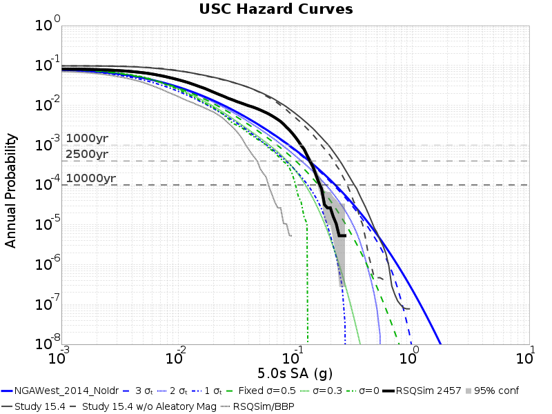
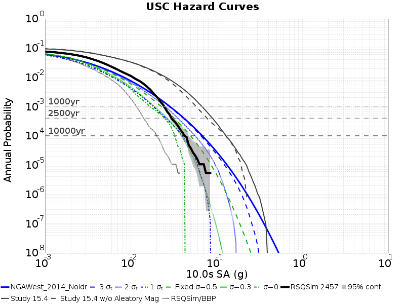

RSQSim 2457 USC Hazard Curves
GMPE: NGAWest2 2014 Averaged No Idriss, Vs30 Source: Simulation Value
Study Details
| Name | RSQSim 2457 |
|---|
| Date | Apr 2018 |
| Region | Central California Box |
| Description | RSQSim prototype with catalog 2457 |
| Velocity Model | CVM-S4.26, 4.26 |
Table Of Contents
Hazard Curves
(top)
Legend:
- Simulations Curves (truncated below lowest possible y-value)
- Black Solid Line: RSQSim 2457
- Gray Solid Line: Study 15.4
- Gray Dashed Line: Study 15.4 w/o Aleatory Mag
- Gray Dotted Line: RSQSim/BBP
- GMPE Curves
- Blue Solid Line: NGAWest_2014_NoIdr full curve
- Blue Dashed Line: NGAWest_2014_NoIdr, 3-sigma truncation
- Blue Dotted Line: NGAWest_2014_NoIdr, 2-sigma truncation
- Blue Dotted and dashed Line: NGAWest_2014_NoIdr, 1-sigma truncation
- Green Dashed Line: NGAWest_2014_NoIdr, Fixed sigma=0.3
- Green Dotted Line: NGAWest_2014_NoIdr, Fixed sigma=0
- Gray Dashed Lines: 1000 yr, 2500 yr, 10000 yr return periods
3s Hazard Curves
(top)

5s Hazard Curves
(top)

7.5s Hazard Curves
(top)

10s Hazard Curves
(top)
